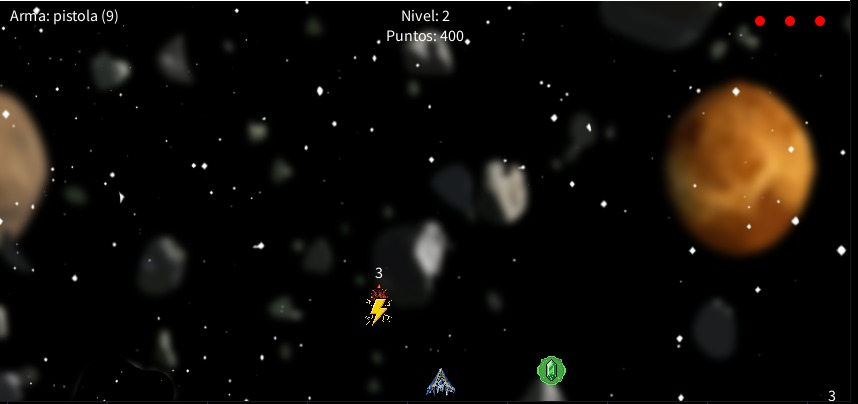
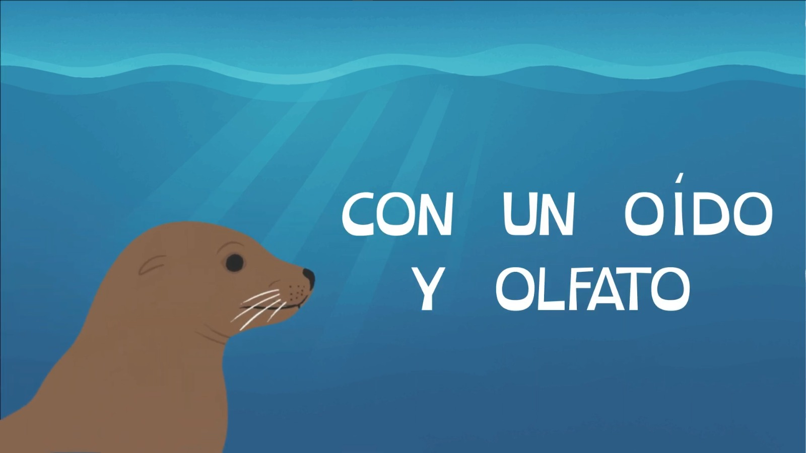
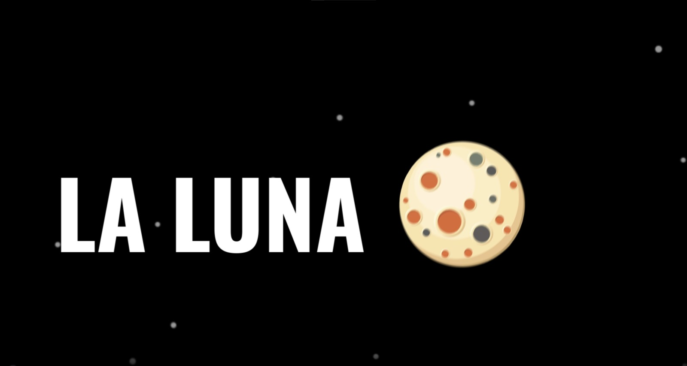
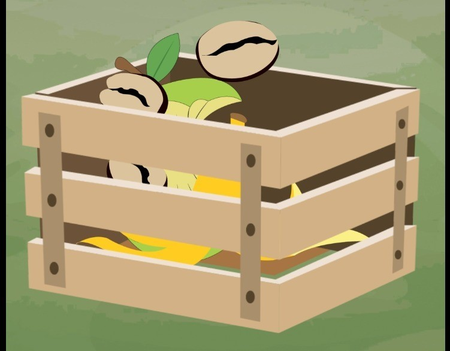

Juego espacial desarrollado desde cero en Java, aplicando lógicas complejas de Programación Orientada a Objetos.
Exploración visual en blanco y negro sobre la dualidad humana, los refugios personales y la soledad silenciosa.
Participación en certamen de naturaleza capturando la biodiversidad, vuelo y texturas de especies endémicas.

Serie de clips animados educativos galardonados, diseñados para concienciar a niños sobre la protección de la fauna.

Experiencia inmersiva que simula un viaje estelar utilizando cámaras virtuales y paralaje profundo en After Effects.

Pieza educativa en formato vertical sobre el aprovechamiento del café y plátano para la creación de compost.